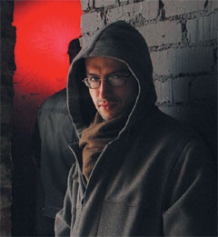

Окраины свободы (Ольга Паутова, ЭКСПЕРТ online)
В технологических, политических, культурных системах глобализованного мира существуют зоны, создающие возможность для альтернативного высказывания и активного противодействия
В начале XX века идеи синтеза в искусстве воспринимались как смелый авангард. Манифест французского режиссера и мыслителя Антонена Арто о тотальном театре был тогда именно манифестом, а не отражением реальности. К рубежу века синтез и тотальность пронизали все сферы человеческой деятельности настолько, что разделить их и раздать на откуп узким специалистам стало абсолютно невозможно. Среди событий разного масштаба и географии можно привести немало примеров синтеза протестных политических движений, новых технологий и современного искусства. Что их объединяет?

Осенью 1999 года во время конференции Всемирной торговой организации в Сиэтле к профсоюзной демонстрации протеста присоединились тысячи молодых активистов, координируюших действия через мобильную связь и портативные компьютеры с выходом в интернет. «Поколение Сиэтла» принесло новое понимание прямого действия, превратив его в карнавал. Позже возник флэшмоб — акция в общественном пространстве, когда группа незнакомых людей организуется при помощи коммуникаций в интернете или других сетях. Они собираются в назначенное время, производят неожиданное действие и затем исчезают, не вступая друг с другом в контакт. В Россию флэшмоб пришел в 2003−м и именно здесь стал однозначно политизирован. Особенно ярко это проявилось в кампаниях неповиновения в канун парламентских (декабрь 2003−го) и президентских (март 2004−го) выборов. Так, во время одной из первых акций люди, собравшись на Пушкинской площади в Москве, щелкали принесенными пультами от телевизоров в направлении огромных рекламных мониторов. В Тюмени флэшмобберы окружили водонапорную башню, кидали в нее снежками и кричали: «Вова, слезай!».
О связи трех составляющих — информационных технологий, политактивизма и современного искусства — говорил во время январского визита в столицу УрФО по приглашению Екатеринбургского филиала Государственного центра современного искусства Олег Киреев. За три дня московский арт— и медиакритик (он же руководитель проекта «Гетто», посвященного культурной и политической аналитике, политический активист и художник) успел открыть в Библиотеке главы города курируемую им выставку «От самиздата к тактическим медиа», провести компьютерную презентацию своей «Поваренной книги медиаактивиста» (она выходит в феврале в издательстве «Ультра.Культура») и прочитать лекции о тактических медиа.
— Олег, определите, пожалуйста, термин «тактические медиа».
— Это низкобюджетные средства информации и коммуникации, получившие распространение в период технологической революции 1990−х: интернет, персональные компьютеры, любительские видеокамеры, мобильные телефоны и прочее. Они активно используются антиглобалистским движением в качестве альтернативы. Термин впервые введен в 1996 году, в манифесте «ABC тактических медиа», написанном Дэвидом Гарсиа и Гертом Ловинком (Амстердам, медиацентры De Waag и De Balie). Текст определяет тактические медиа как «медиа кризиса, критики и оппозиции». Слово «тактический» подчеркивает мобильность, которая дает превосходство над такими «стратегическими» игроками, как большой бизнес и государство. В последнее время термин прокрадывается и в российскую реальность, отражая такие явления, как альтернативные новостийные порталы, пиратские радио и телевидение и другие примеры гражданского использования новейших технологий.
Свои медиа
— Почему, занимаясь тактическими медиа и политическим активизмом, вы называете себя художником?
— Медиа — это то, что опосредует отношения между людьми, а также между ними и реальностью. Французский философ-революционер Ги Дебор писал в книге «Общество спектакля»: «Все, что раньше существовало непосредственно, теперь переходит в область репрезентации». В обществе спектакля люди перестают воспринимать реальность через свои органы чувств, опыт и знания, а начинают воспринимать ее, исходя из «картинок», способов репрезентации предмета на телевидении. Власть заинтересована в создании и поддержании общества спектакля для того, чтобы погрузить людей в управляемое состояние: «Индустрия отчужденного труда сменяется не менее отчужденной индустрией досуга». Художник же работает с медиа по природе своей, он сам — посредник. В информационную эпоху, когда образы как бы вживлены в цифровую и технологическую действительность, художник все больше уходит от исполнения традиционной роли в обществе, которая предписывает ему создавать прекрасное. Хотя ни в одну эпоху суть дела не заключалась в том, что он просто рисует что-то на холсте, а всегда — в том, что он работает с образами, транслирует образы.
У людей, у человечества в целом, сегодня существует определенный разрыв между органами чувств, восприятия — с одной стороны, и анализом, рефлексией — с другой. Люди не могут осмыслить изменившийся мир, поскольку для этого существуют старые термины, старый язык, не годный для новых целей. Отсюда консерватизм и страх перемен: мир уже изменился, но нет таких слов и механизмов, чтобы эти изменения осмыслить. А в России, где сознание отстает от реальности больше, чем во всем мире, консерватизм и страх перемен еще сильнее. И художник — это тот, кто работает на пике изменений, создавая термины, меняя язык. В качестве художника можно работать с медиа в дискурсивном поле, в поле символов, в поле образов, в поле акций и компаний. Поэтому, возвращаясь к вашему вопросу, разные свои работы я осмысляю как художественные произведения.
— В лекции о тактических медиа вы говорите о требованиях нейтральности. К чему сводится в таком случае роль художника?
— Да, существует договоренность о правилах, которые позволяют избежать манипулятивности, передавая информацию о реальности посредством видеодокументирования. Это отказ от закадрового комментария, верная последовательность эпизодов события (в отличие от их произвольного монтажа, который часто используется на телевидении) и нейтральность подачи материала (съемки ведутся как бы с точки зрения очевидца, случайного прохожего). Художник должен быть максимально прозрачным для того, чтобы передавать информацию. Дзенские наставники еще в древности говорили: сделай себя максимально пустым. А в наше время французский философ Жиль Делёз писал: позволь потокам информации свободно протекать через твое тело. Данные — это такие потоки, которые не допускают никаких изменений. Изменения вызываются помехами в каналах информации, а в результате нарастания информационных шумов нарастает и энтропия. А художник занимается тем, что преодолевает энтропию посредством создания организации.
— Художники и активисты пользуются приемами общества спектакля, такими как реклама, театрализация выступлений: вспомнить хотя бы опыт Сиэтла или Квебека-2001. Действуют ли эти приемы сегодня?
— Я начинал работать именно в конце 90−х, когда в полную силу развилось движение радикальных художников в Москве. Тех самых, которые лаяли, размахивали кулаками на Красной площади, устраивали баррикады. Я был в числе организаторов одной из таких акций. Мы перегородили Большую Никитскую баррикадой из художественных работ, перекрыли движение: это было празднование годовщины Красного мая — парижских волнений 1968−го года, пик которых пришелся на май. Тогда казалось, что художники с помощью таких вот острых высказываний в городском пространстве, таких интервенций могут каким-то образом влиять на политику. Но прошли те времена, художники не смогли ничего изменить. И я думаю, потому, что они не были достаточно чистыми, то есть недостаточно хорошо понимали специфику информации. Сейчас я перешел к работе с медиа и стараюсь распространить в России идеи, наработанные на Западе. Я считаю, это достойная задача и для искусства, и для политики: искусство в результате осознает специфику этих технологий и находит новые темы, улучшается политическая экология, общественное пространство.
ЦРУ и искусство
— Простой вопрос: почему культура и искусство — это важно?
— Культура создает карту реальности. Когда говорится, что художник работает с образами и моделями, это означает его созидательную роль в области символического порядка, который стоит за физическим порядком. На Западе сейчас очень распространен термин mapping; когда нужно описать что-то, говорится — let’s map it. И художники занимаются именно таким картографированием реальности, они дают вещам названия и транслируют отношения между ними. Это объясняет большие инвестиции в культуру. Сейчас уже все сколько-нибудь мыслящие политики, причем я имею в виду разные направления политической мысли, занимаются инвестированием в культуру. Без культурной пропаганды Америка не выиграла бы холодную войну; без политических технологий не делаются выборы. Но политтехнологии и пропаганда не отвечают тем требованиям к информации, о которых я говорил. Они передают ее не точно и достоверно, а наоборот, занимаются затуманиванием реальности, искажением пропорций и созданием ложных символических ценностей. Художник же восстанавливает эти ценности, позволяет людям вернуться к реальным пропорциям, придать реальность картине мира.
— В вашем примере с американцами есть какое-то противоречие: ЦРУ ставило перед собой задачу выиграть в холодной войне путем сознательного искажения реальности, а для этого финансировало художников, которые картину мира проясняли…
— Я говорю о том, что политики понимают важность ценностей второго порядка. Но если они подходят к этим задачам не с чистыми руками, то вместо информации получается пропаганда. Конечно, иногда по ходу появляются интересные вещи. Например, последнее время исследователи-историки на Западе говорят о том, что, похоже, ни один культурный прогрессивный журнал, который существует в Европе, не был учрежден без влияния или помощи ЦРУ. Таким же образом, например, советские диссиденты, работая на радио «Свобода», могли сообщать достоверные данные, несмотря на то, что финансировалось это на деньги американской пропаганды. Это касается такой темы, как large margin of freedom — «пространные окраины свободы». В системе существуют окраинные области, в которые мы можем внедриться и ими пользоваться, находя способы транслировать свои послания, занимая неожиданные места. Новые технологии — это такая зона, где не создано никаких законов и прав, это зона, где нормы и новые понятия возникают мгновенно, по ходу, а законы пишутся после. Поэтому очень важно художникам и активистам работать на самом краю этих новейших открытий и исследований, создавая прецеденты норм и правил. Нужно опередить военных и политиков, которые рассматривают эти новые явления в интересах краткосрочной выгоды, и выработать более гуманные, мягкие и правильные подходы к тому, что появляется в этом мире.